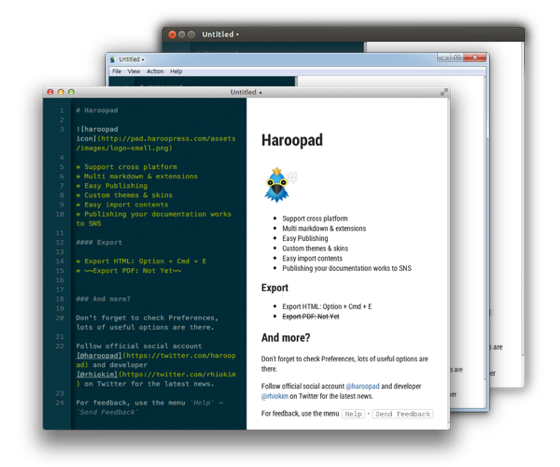

Haroopad
is a tool for creating web-friendly document in markdown editor.
You can also based on the markdown, to create Web documents, blogs, as well as e-mail, the report documents expert.
And then support Windows, Linux, the Mac OS, you get the experience of editing the same document markdown in the desired platform.
